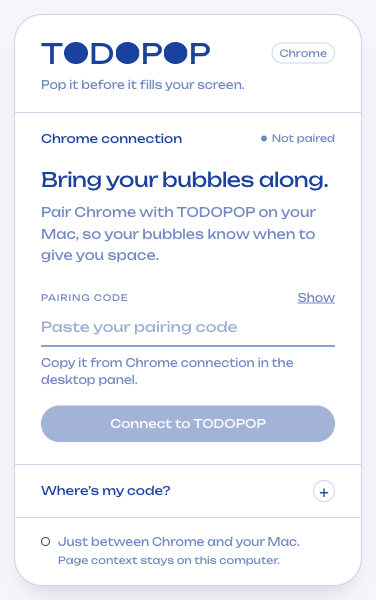
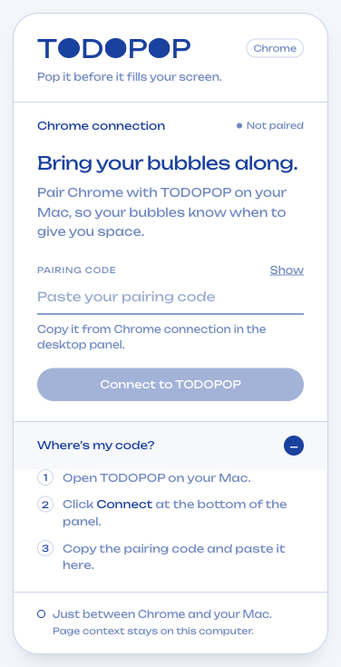

报告中的人工复核清单可以直接勾选，状态仅保存在当前浏览器本地。未勾选的条目不代表自动化已验证。手机、Step、计时条和音效不在本轮范围。
TODOPOP 开发进度报告
日期：2026-10-23。范围以你最新确认的规则为准：手机、Step、Focus 计时条与音效不做；保留自动 URL Focus。
现在可以用到什么
本轮从扩展 UI 开始，继续完成了桌面主要功能闭环。可以试用，但还不是正式公开发布版，也没有把 Figma 的软体挤压效果完整复现。
| 模块 | 已完成内容 | 状态 |
|---|---|---|
| Chrome Extension UI | 与面板共享 Logo、Unbounded、蓝色方案、按钮、输入框和状态组件；有未配对、连接中、连接成功、断开、错误与帮助状态 | 完成 |
| 输入框样式 | 取消你截图里的蓝色矩形 focus 框，只保留下划线与输入光标；桌面输入框同步 | 完成并专项测试 |
| 本地数据 | 版本化 state.json；旧 tasks.json 自动迁移并先备份；存任务、分组、设置、完成历史与自动专注历史 |
完成 |
| 点击规则 | 气泡有链接就打开 URL，无链接就 Pop；编辑浮层主按钮同样区分 | 完成 |
| 增长 | 四级基础大小、有效等待时长、正式速度和独立 Demo 预览 | 完成基础逻辑 |
| 全局暂停 | 30 min、1 hour、Till tomorrow、Until I resume、Resume；保持气泡可见，停止增长并显示暂停样式 | 完成 |
| 单任务 Snooze | 隐藏单个任务 10 分钟；列表可点 Show now 提前恢复 | 完成，与全局 Pause 分开 |
| 布局 | 圆形避让、面板保护区、四边排列、Shuffle、组的 preferred side；达到容量阈值暂停增长 | 已实现可用近似 |
| 自动 Focus | Chrome 前台匹配工作 URL 就隐藏普通气泡和面板；离开/断开就恢复；保留既有本地认证与重连 | 完成逻辑；真实系统切换请人工复核 |
| 分组/主题 | 新增、改名、删除组；六个预设色、占用色交换、自定义颜色保持；组侧边位置；四种 Tint 与自定义色 | 功能完成；部分视觉采用简化控件 |
| 手动排序 | grip 拖动、方向键排序，rank 保存到本地 | 完成，键盘路径已自动验证 |
| 归档 | Week / Month、日期切换、完成数、最佳日、自动专注历史时长、每日完成列表 | 完成 |
| Rebubble | 新 ID、新一轮、等待与增长重置；原完成任务及历史保留 | 完成 |
| 编辑与 Undo | 靠近目标气泡的独立编辑窗口，Save/Cancel/Delete；删除 toast 可撤销 | 完成 |
| 最小化 | 右下角 Launcher、Dock/菜单恢复、注册 ⌘⇧Space；保存主面板位置 | 完成；快捷键冲突需人工确认 |
| 未保存草稿 | 创建任务时切去管理分组，再回来保留当前草稿 | 完成 |
| 本机安装产物 | Apple Silicon .app / .dmg，打包 App 的启动、创建任务、完成、退出冒烟测试 |
完成预览包；不等于正式签名发布 |
增长与 Demo 的具体规则
- 默认是 Real speed，使用正常计时。
- Now! 以每 2 分钟增加约 1 个“逻辑厘米”为基准，1 个逻辑厘米按约 37.8 px 处理；不是拿实体尺子在所有显示器上都能测到相同的厘米。
- Soon 为该速度的 1/4，Today 为 1/2，Remind 保持小尺寸。
- Demo · 60× 使用独立临时增长时钟，便于快速检查增长与满屏状态；不覆盖正式累计增长。
- 退出 Demo 会恢复正式尺寸。重启也默认回到 Real speed。Demo 只隔离增长；Pop/Delete 等任务操作仍会保存，建议用测试任务观察。
- 全局 Pause、自动 Focus、Screen full 停止增长；Snooze 停止对应任务增长。
- 程序退出或系统休眠期间不补算增长，避免回来后突然长满屏幕。增长定期保存，正常退出前会刷新；异常强退时最多可能损失最近一个保存周期的增长进度。
本轮解决的稳定性问题
- 对过期/已销毁窗口的 IPC 继续保持防护，不把迟到鼠标事件变成主进程异常。
- 完成、删除、编辑关闭和 Snooze 后的原生窗口生命周期分别处理。
- 启动过程中立即退出，不再把已取消的异步窗口加载当成启动失败弹窗。
- 正常退出先刷新状态，再结束进程，避免保存与关闭竞争。
- 数据损坏保留恢复副本；不能读取的未来 schema 版本不会被当成当前版本直接覆盖。
- 面板、Launcher、编辑浮层处于普通气泡之上的窗口层级，避免巨大气泡遮挡主要控制入口。
跳过或尚未完全还原的部分
| 项目 | 现在的处理 | 为什么不把它算作完整完成 |
|---|---|---|
| Figma 的软体挤压、非圆形贴边、精确绕行 | 当前为圆形碰撞/避让近似 | 没有实时软体轮廓求解器，不能宣称逐像素复现 Fill-up |
| Screen full 精确占屏率 | 基于圆形面积与可用区域的容量近似 | 不是完整计算屏幕裁切后形状并集，也不是 Figma 百分比的精确测量 |
| 自定义 Hue ring / Saturation 设计控件 | 使用系统原生颜色选择器完成颜色功能 | 没有照搬 Figma 环形控件；主题中的 SVG 着色亦需最终视觉复核 |
| 真实 Mac 前台应用切换 | 自动化验证了算法与消息链路，测试 Chromium 的系统激活存在限制 | 测试明确记录 foreground fixture，真实用户 Chrome / 应用切换必须手动核对 |
| 多屏、Spaces、性能和异常强退 | 有基础边界处理、容量限制和恢复保护 | 未覆盖所有硬件、macOS 配置以及长时间运行 |
| 正式 Apple 签名、公证、商店审核 | 已做本机 ad-hoc 预览包 | 缺正式发布凭据，不擅自上传或提交审核 |
| Intel / Windows / 其他浏览器 | 本轮不交付相应产物 | 目前只验证本机 Apple Silicon 路线 |
| 品牌 App 图标、自动更新 | 仍使用默认 Electron 应用图标；手动安装更新 | 不算正式发布体验 |
手机、Step、Focus 计时条、音效是你明确排除的项目，不计为本轮未完成。
现在怎么试
推荐：本机预览包
- 打开 TODOPOP Apple Silicon 预览 DMG，按安装窗口操作。
- 或直接运行 已打包的 TODOPOP.app。这是本机构建的预览产物，尚非 Developer ID 签名并公证的公开分发版。
- 若用扩展：在
chrome://extensions给已加载的 TODOPOP 点一次刷新。首次安装则 Load unpacked 选择apps/chrome-extension/dist。 - 扩展压缩包也在 release/TODOPOP-chrome-extension-preview.zip，解压后可作为本地扩展目录加载。
- Panel 底部 Connect → 复制配对码 → 扩展弹窗粘贴连接。全程无需用户云账号。
安装包限 Apple Silicon。若系统拒绝陌生来源的预览包，不要关闭系统安全保护；可继续使用当前开发目录，正式分发需补签名/公证。
继续使用源码
npm ci
npm run dev
完整检查先退出正在运行的 TODOPOP，避免占用本地 17846 端口，再执行：
npm run verify
你回来后先看这三份


TODOPOP 测试详情
日期：2026-10-23。自动化使用隔离的临时 App 数据目录和 Chromium profile，不把测试任务写入日常任务库。
已执行的检查
| 检查 | 命令/证据 | 结果与边界 |
|---|---|---|
| TypeScript | npm run typecheck |
桌面、扩展、shared、ui 四个 workspace 通过 |
| 逻辑测试 | npm test；unit.log |
20 项通过、0 失败 |
| 格式 | npm run format:check |
应用、共享包、测试脚本及文档按统一格式检查 |
| 构建 | npm run build；build.log |
Electron main/preload/renderer 和扩展产物生成成功 |
| 扩展 UI | node scripts/extension-ui.mjs；结果 JSON |
真正加载 Manifest V3 扩展，使用受控本机 WebSocket 服务验证配对流程与 UI |
| 桌面验收 | node scripts/desktop-acceptance.mjs；结果 JSON |
15 组真实 Electron 场景通过，rendererErrors 为空 |
| Chrome 集成 | node scripts/e2e.mjs；结果 JSON |
真实 MV3 worker、URL、导航和标签链路通过；前台状态使用已标注 fixture，见下节 |
| 打包 App | node scripts/package-smoke.mjs；结果 JSON |
Apple Silicon App 从 app.asar 启动，能创建/完成任务，正常退出刷新数据 |
完整流水线入口为 npm run verify，原始汇总保存在 summary.json。输入框去矩形 focus 框和最后的草稿保留改动还分别做了专项复跑。测试结果文件中的时间是各次执行时间，不是人工复核签字时间。
20 项逻辑测试覆盖
- 旧任务迁移、保留 ID、一次性生成旧完成记录。
- 分组、设置、增长、历史和已删除记录的序列化往返；拒绝未来 schema。
- Rebubble 新建一轮，保留旧完成历史、清零新增长和专注累计。
- 重复完成幂等；删除与 Undo 不破坏历史。
- 四档全局暂停、明天日界线、手动恢复和到期判断。
- 正式增长速度、低级别速率、暂停/Snooze 不增长、长时间间隔限幅。
- 预设组色交换；自定义色换 Tint 后保持；删除组不删除任务。
- 排序全量校验、重复/缺失 ID 拒绝、rank 保存。
- 圆形布局边界、中心面板避让和容量满判断。
- 归档完成数与跨统计周期的 Focus 时长分摊。 11–20. 原有 URL 标准化、不同路径/域名/query 不误匹配、Google Docs ID、无效协议、前后台判定、同 URL 多任务完成、任务输入与浏览器消息校验等。
15 组桌面场景覆盖
- 旧
tasks.json迁移到state.json，且保留备份与完成历史。 - 正式增长推进；全局 Pause 不隐藏气泡且停止增长。
- 60× Demo 与正式增长隔离，退出 Demo 恢复正式尺寸。
- grip 的方向键排序保存 rank。
- 无链接气泡点击 Pop 并记录完成。
- 有链接气泡点击打开 URL，不自动完成。
- Snooze 与 Show now 保持同任务 ID，区别于全局暂停。
- Rebubble 创建新 ID，保留旧完成任务与历史。
- 删除后点 toast Undo，恢复同一个任务。
- 新建/改名/侧边/自定义组色，换 Tint 不丢自定义颜色。
- 真正右键打开独立编辑窗口，窗口在可用屏幕内，Save 保存。
- 周/月归档、月历 42 格、前后日期操作读取真实记录。
- Launcher 能恢复隐藏的主面板。
- 重启后保存主题、组、排序、暂停和历史，Demo 回到 Real。
- 尚未保存的新任务草稿，切去管理分组后不丢。
链接打开的桌面点击测试会拦截 Electron 的 shell.openExternal 并检查目标 URL，避免在正常 Chrome profile 中打开测试页面。真正的扩展导航测试另用隔离 Chromium 和本机 HTTP 测试页。
扩展 UI 专项
测试了共享本地字体实际加载、三枚 Logo 素材加载、帮助展开、输入验证、错误配对码、真实认证成功、已保存代码不回显、Show/Hide、Change pairing code、重连、断开和 popup 宽度。
额外检查：
- 聚焦配对输入框后，computed
outlineStyle为none，保留下划线。 - 收到桌面 APPEARANCE 消息后，扩展的共享主题变量更新。
- rendererErrors 为空。


必须如实说明的测试边界
macOS 原生前台切换没有在本轮自动化中完整验证。 测试 Chromium 的窗口未能稳定成为系统前台，即使其标签已被激活，Chrome API 返回的 focused 仍为 false。
因此集成脚本在检测到该环境条件后，会明确开启一个只用于测试的 Chrome API 边界 fixture；真实 service worker、URL 查询、导航、标签事件、WebSocket 和 Electron 显隐逻辑仍参与测试。e2e-result.json 的 foregroundFixture: true 与 nativeForegroundVerified: false 保留了这个区别，原始 integration.log 也写有 NOTE。
这项结果只能证明链路在指定前台输入下工作，不能据此声称“你的正常 Chrome 与其它 macOS 应用之间的真实切换已通过”。请按人工清单 A6 复核。
其它未完成的验证：外屏拔插、所有 Spaces/全屏组合、长时间 CPU/显存、真实物理厘米、所有系统色彩控件、干净陌生机器的 Gatekeeper、Apple 公证与商店审核。
运行方式
先退出正在运行的 TODOPOP，避免本地 17846 端口冲突：
npm run verify
单项可使用：
npm test
npm run test:extension
npm run test:desktop
npm run test:e2e
node scripts/package-smoke.mjs
最后一项需要先存在本地 arm64 打包 App；它不会替你完成 Apple 的正式签名、公证或分发审核。
TODOPOP 人工复核清单
日期：2026-10-23。以下复核结果尚未替你勾选；自动化测试通过不代表这些系统层与主观体验已经确认。
A. 先做这 6 项（约 5–10 分钟）
- 启动与旧任务：打开预览 App 或
npm run dev。面板能打开，原有任务仍在，没有主进程异常弹窗。 - 扩展新 UI：在
chrome://extensions刷新 TODOPOP。弹窗的字体、Logo、蓝色、按钮与面板一致；配对输入框聚焦时没有蓝色矩形外框。 - 重新配对：面板 Connect 中复制代码，扩展粘贴后显示 Connected；关闭并重开弹窗仍为已连接。代码默认隐藏，没有在页面上永久显示已保存的完整代码。
- 无链接点击 Pop：建一个无 URL 的测试任务。单击气泡后消失、Popped 增加；不打开浏览器，不出现音效。
- 有链接点击打开：建一个 URL 为
https://example.com的测试任务。点击打开网页，任务不应自动完成。右键编辑后主按钮也应显示打开页面。 - 真实自动 Focus（重点）：让 Chrome 真正在前台并打开匹配页。普通气泡和面板应隐藏；换无关标签或切到其它应用应恢复；返回匹配页再次隐藏。核对恢复不抢走当前应用的键盘焦点。
最后一项特别需要你操作：本轮自动化环境未能稳定把测试 Chromium 设为 macOS 前台，所以用了明确标注的前台边界 fixture 验证链路，没有把它算作真实系统切换已通过。
B. 增长、Demo 与暂停
- 正式速度：建 Now! 任务，保持 Real speed，等待约 2 分钟。可见直径应增加约 1 个逻辑厘米（约 37.8 px），不是物理厘米；Remind 应基本保持小。
- Demo 隔离：切 Demo · 60×，观察快速增长；再切回 Real speed，尺寸回到正式累计值，Demo 的额外增长不应被永久保存。
- 满屏停止与腾空间：建几个高 urgency 测试任务，开启 Demo。进入 Screen full 后停止继续增长；完成一个任务后应腾出空间。检查面板和控制按钮仍能操作。
- 全局暂停：选 30 min / 1 hour / Until I resume。气泡仍可见、变为暂停样式、不继续长；Resume 后继续增长，不瞬间补长。
- Till tomorrow：显示的恢复日期/时间符合你的本地日界线。跨午夜恢复若不便当场测试，保留此项以后核对。
- Snooze 单任务：悬停选择 Snooze，只有该任务隐藏；Floating 中 Show now 能提前找回，其它任务不受影响。
- 睡眠/重启：退出再开、合盖睡眠再开，不应把离线/睡眠时段补算成突然增长。Demo 重启后应回到 Real speed。
C. 编辑、归档和历史
- 独立编辑浮层：真实鼠标右键气泡后，浮层靠近气泡、能输入、没有被气泡盖住；靠近屏幕右边/下边时也没有跑出屏幕。
- 保存/取消：改标题、URL、urgency、group，Save 生效；Cancel 或 × 不保存这次未提交的改动。
- 无链接编辑主操作：无 URL 任务编辑层显示 Pop；有 URL 显示打开页面。
- 删除撤销：Delete 后任务消失，toast 的 Undo 立即恢复同一个任务；不是新建一个同名任务。
- Rebubble：完成后在 Popped 点 + Again。新任务应重新开始，旧完成记录与统计仍存在。
- 周/月归档：WEEK / MONTH、前后日期、当天列表和数量合理；没有混入 Figma 的样例历史。
- 跨日专注统计：自动 Focus 的时长归档合理。跨午夜与周/月边界若暂无场景，留待长时间使用复核。
- 创建草稿：输入新任务标题后点 + New 管理分组，再回 Blow a bubble，尚未提交的标题不要丢失。
D. 排列、颜色与桌面行为
- 排序：拖 grip 改顺序；选中 grip 后 ↑ / ↓ 同样可移动。重启后顺序不应自动回到 urgency 排序。
- Shuffle / Line up：各方向排列有明显变化；回 Any 使用各组位置。手动拖动和自动避让没有明显来回抖动。
- 分组：新建、改名、移除。移除组后任务仍在，变成 No group。
- 颜色：选择占用的预设组色时交换；自定义组色换 Tint 后保持；色彩与文字可辨认。
- 主题：Blue / Berry / Teal / Graphite 和自定义色传播到面板、气泡与连接中的扩展。核对 Logo 和 SVG 图标的着色是否可接受；当前并非完全逐像素复刻所有 Tint 稿。
- 最小化：× 关面板后右下 Launcher 能重新打开，Dock/菜单也能恢复。
- 快捷键：⌘⇧Space 能打开面板；若被系统或其它软件占用，记录冲突，先用 Launcher/Dock。
- Spaces / 全屏：切换桌面空间与全屏 Chrome 后，气泡显隐和点击正常。
- 多显示器/缩放：连接外屏、移动任务、拔掉外屏、改变缩放后，没有丢到找不到的位置。此项尚未在不同硬件上验证。
- 可用性：没有链接的气泡直接 Pop 是否符合预期；按钮、输入字号与默认蓝色是否舒适。记录你想调的地方，不必为了“通过”勾选。
E. 预览安装包与发布条件
- 本机安装：预览
.dmg能打开、复制 App、双击启动，不要求 Node.js 或打开终端。 - 独立 App：退出开发版后再开打包版，不能两个版本同时抢同一本地端口。
- 更新保留数据：替换预览 App 后，任务、组、主题和历史仍在。
- 正式分发前补齐：应用专用图标、Developer ID 签名、公证、干净机器 Gatekeeper 验证、扩展商店审核、更新机制。
当前包是 Apple Silicon 本机预览，未做 Developer ID 签名与 Apple 公证，不将“能在构建机器上启动”当作已经具备公开分发条件。
反馈格式
项目：例如 A6 自动 Focus
操作：打开任务页 → 切到微信
期望：气泡恢复，微信仍能输入
实际：……
环境：macOS / Chrome 版本、是否外屏或全屏
截图或录屏：……